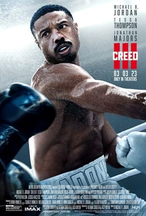

Adonis Creed, aún dominando el mundo del boxeo, prospera en su carrera y en su vida familiar, pero un amigo de la infancia y antiguo prodigio del boxeo reaparece tras salir de la cárcel y está ansioso por demostrar que merece otra oportunidad.
Gabriele Amorth, el jefe de exorcistas del Vaticano, descubre una conspiración que se remonta a cientos de años atrás mientras investiga la aterradora posesión de un niño pequeño.